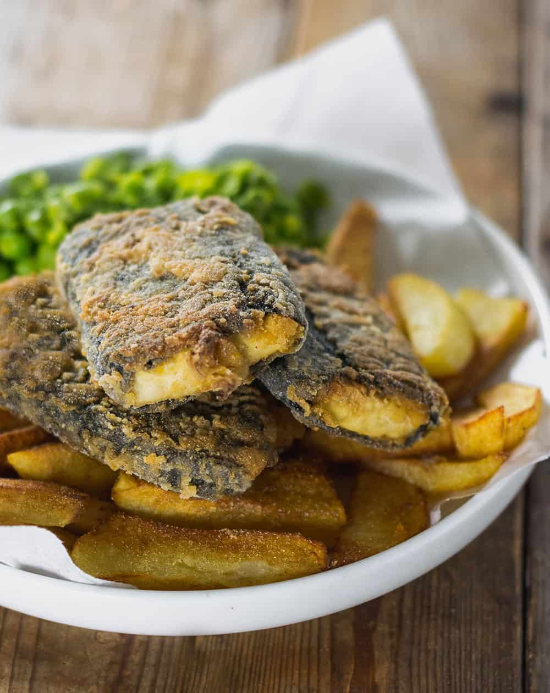

Beer Battered Vegan Fried Fish

Description
Vegans may not eat fish but that doesn’t mean we can’t enjoy beautifully fried and flaky “fish”. Just like my Vegan Fish Sticks and Tuna Sandwiches, this Beer Battered Vegan Fried Fish tastes even better than the real thing. Perfect if you’ve been missing classic fish and chips! The flaky “fish” in this recipe is made from a savory mix of hearts of palm, Old Bay seasoning, and nori sheets. No tofu, chickpeas, or artichoke hearts needed! When coated in the rich and airy beer batter, the fried vegan fish sticks become so crispy and irresistible.
Ingredients
For the fish
- (2) 15-ounce cans hearts of palm, drained and rinsed
- 1/2 cup panko bread crumbs
- 2 tablespoons vegan mayo
- 3 tablespoons crumbled nori sheets
- 1 teaspoon old bay seasoning
- 3/4 teaspoon salt
For the batter
- 1 1/2 cups all purpose flour
- 1 tablespoon garlic powder
- 1 tablespoon paprika
- 1 teaspoon old bay seasoning
- 1/2 teaspoon salt
- 1/2 teaspoon ground black pepper
- 1 1/2 cups beer
For frying
- vegetable oil, safe for frying
Steps
Making the vegan fish
- To a food processor, add the drained hearts of palm, bread crumbs, vegan mayo, crumbled nori, old bay seasoning and salt.
- Pulse several times to combine, but make sure there is still some texture and even large chunks. Don't process into a paste. If the mixture seems really wet, add another 1/4 cup breadcrumbs and pulse.
- Using your hands, form into fish like shapes, about 2-3 inches long and 1 inch wide. Use about 2 tablespoons per fish stick.
- Place the sticks on a plate lined with parchment paper and let them chill in the refrigerator while you prepare the batter.
Making the batter
- To make the beer batter, whisk together the flour, garlic powder, paprika, old bay seasoning, salt and pepper.
- Gradually whisk in the beer until a batter forms and is smooth.
Frying the fish
- Add oil to a large, heavy bottomed pot about 2-3 inches deep. Heat to 375 degrees F, using a thermometer for best results and safety.
- Quickly dip the chilled fish sticks into the batter one at a time, then place in the hot oil, carefully. I use a fork to dip them in and carefully out of the batter. Handle them gently or they will fall apart, but once they are fried they are very sturdy.
- Cook for about 3 minutes on each side, until golden brown.
- Drain on a wire rack. Enjoy immediately with Vegan Tartar Sauce and Air Fryer Fries, or use in Vegan Fish Tacos.
Notes
- Can’t find hearts of palm? Try using jackfruit or artichokes instead.
- Gluten free? Substitute gluten free breadcrumbs and use gluten free beer.
- How to reheat? For best results, reheat leftover “fish” in an air fryer or oven at 325 degrees until heated through and crisp, about 5-10 minutes.
- Don’t want to use alcohol? No worries, substitute sparkling water instead, unflavored.